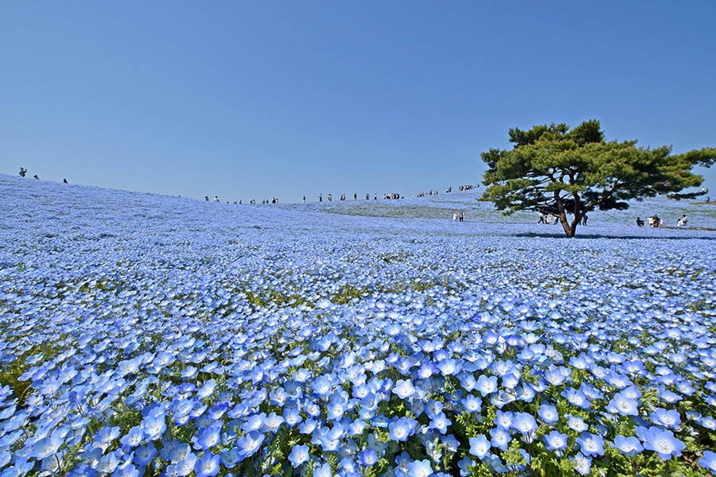
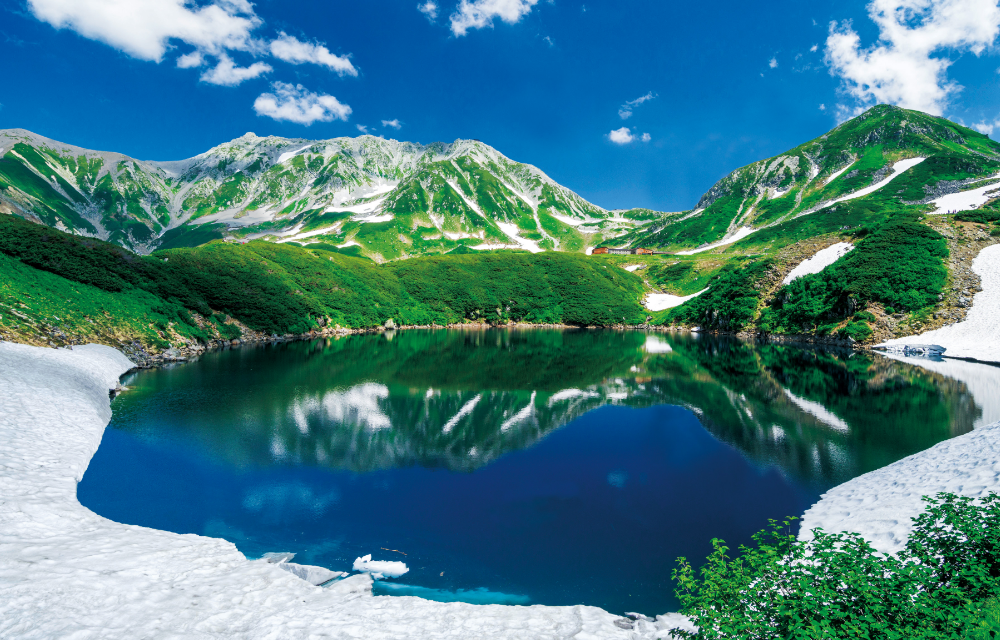

01 HITACHI SEASIDE PARK, IBARAKI
茨城県・ひたちなか市
空へ溶け込む
ネモフィラの丘
丘一面を埋め尽くすネモフィラが、空とつながるような青い風景をつくります。春の風を感じながら歩けば、花の中に包まれるような時間を楽しめます。
- 一面のネモフィラ
- 空と花の青
- 開放的な丘
ACCESS MAP
国営ひたち海浜公園
02 HIROSAKI PARK, AOMORI
青森県・弘前市
夜の水面を彩る
弘前の桜
園内を包む桜と、光を映すお濠が幻想的な春の夜を描きます。昼のやわらかな花景色とはひと味違う、弘前公園ならではの華やかさに出会えます。
- お濠を囲む桜
- 幻想的な夜桜
- 水面の映り込み
ACCESS MAP
弘前公園

03 TATEYAMA KUROBE, TOYAMA
富山県・立山町
残雪が描く
山岳の春
青空の下に連なる山々と、春にも残る白い雪。立山黒部アルペンルートでは、花の季節とは異なる雄大な雪景色から山の春の始まりを感じられます。
- 迫力ある残雪
- 雄大な山並み
- 澄んだ山の空気
ACCESS MAP
立山黒部アルペンルート
TRAVEL NOTE
春旅を心地よく
楽しむために
見頃を確かめて
花の開花や山の雪解けは年によって変わります。出発前に現地の最新情報を確認しましょう。
寒暖差への備えを
朝晩や山間部は冷え込むことがあります。重ね着できる上着を用意すると安心です。
風景を大切に
花畑や園路では地域のルールを守り、美しい春景色を次の人へつなげましょう。